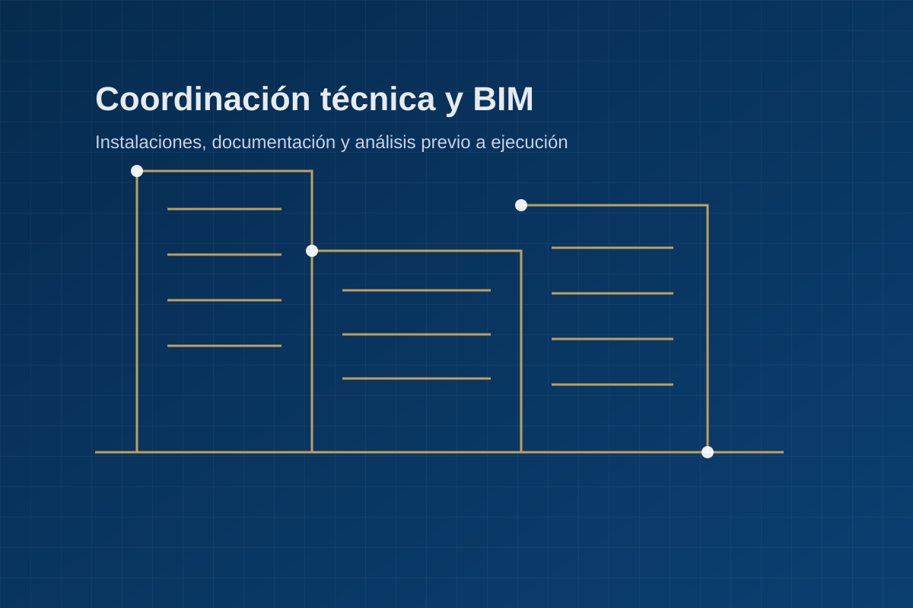

01
Anteproyectos de instalaciones
Definición técnica inicial para baja tensión, climatización, ventilación, fontanería, energía y otros sistemas del edificio.
ARM Ingeniería presta servicios de consultoría técnica, anteproyectos, estudios, licitaciones y documentación de instalaciones con metodología BIM, criterio normativo y enfoque práctico.
La actividad se orienta a servicios propios de ingeniería y consultoría técnica, no a la ejecución o instalación de equipos.
Definición técnica inicial para baja tensión, climatización, ventilación, fontanería, energía y otros sistemas del edificio.
Apoyo técnico documental, análisis de requisitos, mediciones, criterios técnicos y preparación de propuestas.
Modelado, coordinación y documentación digital para mejorar la comprensión del proyecto y reducir interferencias.
Comparación de soluciones, estimaciones energéticas y análisis previo para tomar decisiones con datos.
Certificados de eficiencia energética, informes técnicos, memorias y documentación justificativa cuando proceda.
Colaboración con arquitectos, proyectistas y promotores en fases de diseño, revisión y documentación.
La metodología BIM permite ordenar la información del proyecto, visualizar soluciones y anticipar problemas antes de que lleguen a obra. Es una forma de trabajar más clara para técnicos, clientes y colaboradores.

El objetivo es que cada colaboración avance con claridad desde el primer contacto hasta la entrega de documentación.
Revisión de necesidades, alcance, documentación disponible y condicionantes técnicos.
Planteamiento de soluciones viables, criterios normativos y estrategia documental.
Elaboración de estudios, anteproyectos, modelos, mediciones o informes según el alcance.
Documentación clara y acompañamiento técnico para resolver dudas posteriores.